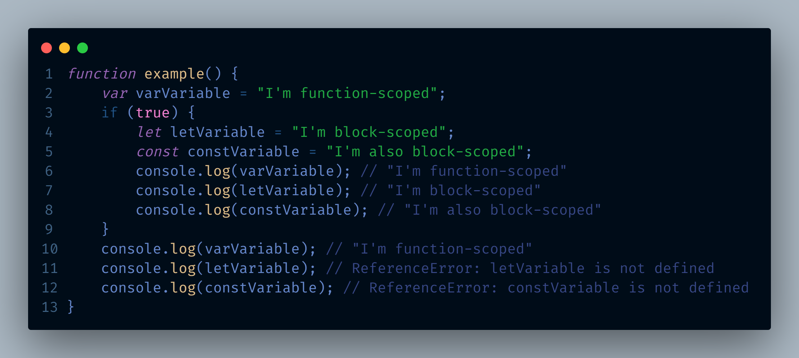

Question 1: Discuss the scope of var, let, and const.
1. 'var': It is function-scoped, meaning a variable declared with `var` is accessible within the function it was declared in. If declared outside any function, it becomes globally scoped. It's important to note that `var` variables can be re-declared and updated.
2. 'let': It is block-scoped, meaning it is only accessible within the block it was declared in. `let` variables can be updated but not re-declared within the same scope.
3. 'const': Like `let`, `const` is also block-scoped. However, `const` variables cannot be updated or re-declared. This doesn't mean they are immutable, it just means the variable identifier cannot be reassigned. For instance, if the `const` variable is an object, the properties of the object can still be updated.
Here's an example to illustrate the difference:
